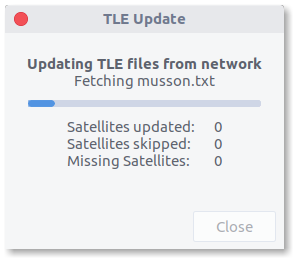
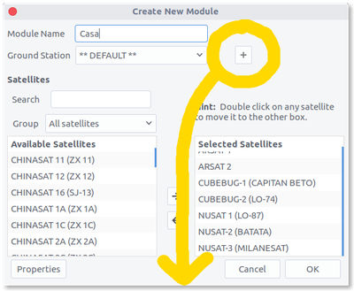
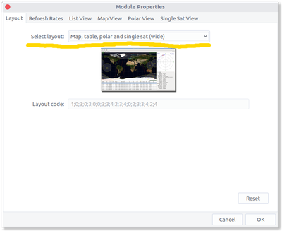
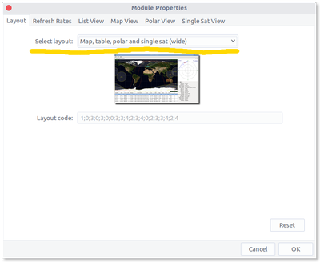
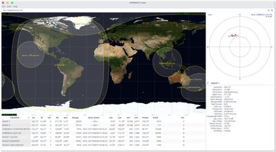

Cómo saber si hay un satélite argentino arriba tuyo
No te gustaría poder ver algo como esto en tu máquina, para saber cuándo alguno de los satélites argentinos anda por el cielo que está arriba tuyo?:

Parece algo salido de una película, es re interesante para curiosear, y lo mejor de todo es que es una pavada tenerlo. Está todo disponible con programas y datos libres y gratuitos, y sin tener que hacer casi nada de trabajo. Así que les dejo los pasos para reproducirlo:
Programa y datos
Primero que nada necesitamos instalar GPredict, el programa que hace todo esto. Se puede bajar desde el sitio oficial: http://gpredict.oz9aec.net/
Para quienes estén en Ubuntu, pueden instalarlo desde los repositorios:
Lo abrimos y por primera vez vamos a ver un dashboard un poco diferente al que mostré, con datos de satélites y la estación espacial internacional. Vamos a decirle que se baje datos actualizados, así las órbitas que vemos tienen menos error: vamos al menú "Edit" > "Update TLE" > "From network". Eso nos va a mostrar una ventana con el progreso de la actualización, solamente tenemos que esperar a que termine (unos segundos) y luego cerrar la ventana.
Configurar qué queremos ver
Ahora solo tenemos que decirle al programa dos cosas: qué queremos ver, y dónde estamos.
Vamos al menú "File" > "New module", lo que nos va a mostrar una ventana como esta:

Rellenamos:
"Module Name": nombre de nuestro dashboard.
"Selected Satellites": los satélites que queremos ver, que agregamos haciendo doble click en la lista de la izquierda ("Available Satellites"). Por suerte permite buscar :) Los satélites argentinos actuales son los CUBEBUG, NUSAT y ARSAT (hay varios de cada tipo, NUSAT-3 por ejemplo es el Milanesat de Satellogic!).
Guardamos, y terminamos con algo como esta imagen:

Todavía no se ve muy lindo, y falta nuestra posición. Pero ya podemos ver la posición actual de los satélites que nos interesaban!
Agreguemos nuestra posición. Para ello hay que editar el módulo (dashboard), lo hacemos desplegando el menú que se abre con este botón (arriba a la derecha, en la esquina del mapa) y eligiendo la opción "Configure":

En la ventana que se nos abre (que es la misma que cuando creamos el dashboard), hacemos click en el botón con un signo "+" que está al lado de "Ground Station". Ello nos abre una ventana donde rellenar nuestra posición:

Lo importante a rellenar es "Name", "Latitude" y "Longitude" (datos que podemos obtener con el gps del celular, usando aplicaciones como esta). "Altitud" también es útil, pero no super importante.
Guardamos la ubicación, y ahora en la misma pantalla de edición del dashboard, vamos a hacer un último paso para que se vea un poco más lindo (al menos a mi gusto, jeje). Hacemos click en el botón "Properties". Esto nos despliega una ventana, en la que solo nos interesa cambiar el valor de "Select layout":
 

Elegimos "Map, table, polar and single sat (wide)". Guardamos todo, y listo! Ya tenemos nuestro super dashboard satelital :)
Podés dejar de leer en este punto, o si te interesa saber un poco más, debajo explico qué son las cosas más importantes que se ven en el dashboard.
Qué estamos viendo en el mapa?
En el mapa se ven las posiciones de los satélites, y el área de la tierra que ellos "cubren". Imaginate una pelota muy grande (o un planeta, jeje): si estás muy cerca ves poco, pero si te alejás, ves mucho más. Cuánto ves? Ves una zona de la pelota que tiene forma de círculo. Un radio de X distancia alrededor tuyo.
Con los sates pasa esto mismo: si están muy cerca de la tierra (como los NUSAT), ven menos de ella al mismo tiempo. Si están más lejos (como los ARSAT), ven más. Dependiendo de qué función tenga el satélite, conviene estar más lejos o más cerca, y no hay una "mejor". Por ejemplo, no sirve estar super lejos y cubrir un montón si lo que interesa es sacar fotos detalladas de ciudades. Y no sirve estar re cerca y cubrir poco si lo que interesa es transmitir señales de comunicaciones.
Si dije que el area que cubre tiene forma de círculo, por qué no se ven como círculos en en mapa? Los ARSAT parecieran cubrir un cuadrado, mientras que los NUSAT ven círculos o cosas más deformes dependiendo del momento!
Eso es culpa de la proyección que usamos en el mapa. El mapa deforma mucho la imagen, la estira más cuanto más cerca estemos del polo. Si lo viésemos en un globo terraqueo, se verían como círculos.
Cosa extra que se puede ver: si hacemos click derecho en el punto de un satélite, podemos tildar la opción "Ground Track", y eso nos muestra el camino que el satélite va a recorrer durante las próximas horas. Si lo hacemos para un ARSAT no se va a ver ningún camino, porque son sates que están siempre en el mismo lugar en el cielo! (geoestacionarios).
Qué estamos viendo alrededor?
Al costado hay dos cosas: un gráfico con forma de mira ("vista polar"), y un grupito de datos de un satélite.
El gráfico con forma de mira es el cielo que vemos desde nuestra casa, con las posiciones de los satélites que lleguemos a ver (si es que hay alguno arriba nuestro). Si por ejemplo vivís en Argentina y pusiste tus coordenadas, deberías siempre poder ver a los dos ARSAT, y de a ratos algún otro.
Los datos que se ven abajo del gráfico son el detalle de algún satélite en particular. Con el menú que tiene esa sección (botoncito con flecha hacia abajo), podemos elegir qué satélite ver. Cosa que sorprende a la mayoría de la gente: velocidad de los NUSAT o CUBEBUG, de 7 km/s. O sea, más o menos 23000 km/h. Un poquito rápido, suficiente como para dar la vuelta al mundo 16 veces por día (lo hacen!).
Otra cosa útil: podemos ver cuándo es la próxima pasada del satélite por encima nuestro (o cuánto tiempo le falta antes de irse de nuestro cielo, si justo está pasando por arriba). Eso se ve en el campo "Next Event".
Y finalmente, la tabla de abajo es similar al detalle del costado. Solo que muestra datos de varios sates a la vez.
Espero que lo disfruten tanto como yo :)

{kind=link}
{kind=link}
{kind=link}
{kind=link}
{kind=link}
{kind=link}